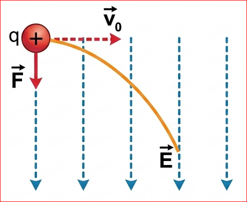
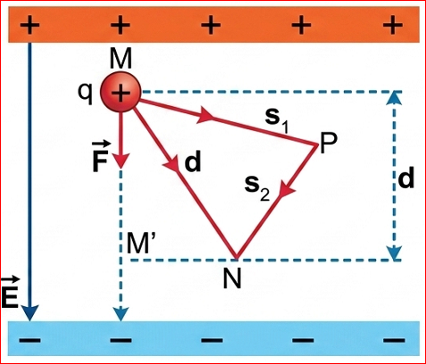
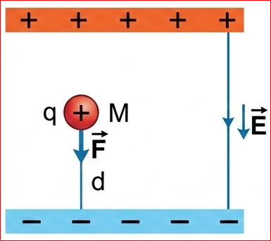

CHƯƠNG III - ĐIỆN TRƯỜNG

Quỹ đạo chuyển động của điện tích thử \( q > 0 \) khi bay vào điện trường đều theo phương vuông góc với đường sức.
Chúng ta đã biết, có sự tương tự giữa chuyển động của một điện tích q trong điện trường đều với chuyển động của một vật khối lượng m trong trường trọng lực. Như vậy thì điện tích q trong điện trường có tồn tại thế năng tương tự như vật khối lượng m trong trọng trường không?
Một điện tích dương q dịch chuyển trong điện trường đều từ điểm M tới điểm N luôn chịu tác dụng của lực điện không đổi (Hình 19.1). Để tính công của lực điện trong dịch chuyển này ta có thể xét chuyển động theo các quỹ đạo khác nhau như theo đường thẳng MN, theo một đường gấp khúc MPN,... Kết quả cho thấy:
Công của lực điện làm dịch chuyển của điện tích q từ điểm M đến điểm N trong điện trường đều bằng qEd, không phụ thuộc vào hình dạng của đường đi mà chỉ phụ thuộc vào vị trí của điểm đầu M và vị trí của điểm cuối N của độ dịch chuyển trong điện trường.
\( A_{MN} = q \cdot E \cdot d \)

Hình 19.1. Chuyển động của điện tích dương q từ điểm M đến điểm N trong điện trường đều
trong đó: d là độ dài đại số của đoạn MM', là hình chiếu của đoạn MN trên một đường sức điện.
Với điện trường bất kì, người ta cũng chứng minh được rằng:
Vì lực điện tỉ lệ với điện tích q nên công của lực điện làm dịch chuyển điện tích q từ điểm M đến điểm N cũng tỉ lệ với điện tích q.
Thế năng của một điện tích q trong điện trường đều đặc trưng cho khả năng sinh công của điện trường đều khi đặt điện tích q tại điểm ta xét. Số đo thể năng của điện tích q trong điện trường đều của một tụ điện được tính bằng công mà điện trường đều có thể sinh ra khi dịch chuyển điện tích q từ điểm ta xét tới bản cực âm của tụ điện.

Hình 19.2. Điện tích dương q trong điện trường đều của tụ điện
Một điện tích dương q được đặt tại điểm M trong điện trường đều của một tụ điện có độ lớn của cường độ điện trường là E (Hình 19.2).
1. Chứng minh rằng công mà điện trường đều của tụ điện có thể sinh ra khi dịch chuyển điện tích dương q từ điểm M tới bản cực âm là \( A = qEd \)
2. Hãy nhận xét về công A khi ta thay q bằng một điện tích âm
Hướng dẫn giải:
1. Lực điện tác dụng lên điện tích q là \( F = qE \). Điện tích q di chuyển cùng chiều đường sức điện từ M đến bản cực âm (quãng đường d).
Công của lực điện là: \( A = F \cdot d \cdot \cos(0^\circ) = qEd \).
2. Khi thay q bằng một điện tích âm (\( q < 0 \)): Lực điện trường tác dụng lên điện tích sẽ ngược chiều đường sức điện (hướng về bản dương). Nếu điện tích dịch chuyển từ M về bản âm (cùng chiều đường sức), lực điện sinh công âm (công cản). Giá trị đại số của công vẫn tính bằng công thức \( A = qEd \) (với q < 0 nên A < 0).
Bản cực âm của tụ điện thường được chọn làm mốc để tính thế năng. Với điện trường của một điện tích hoặc của một hệ điện tích bất kì, người ta thường chọn điểm mốc ở vô cực vì ở đó điện trường và lực điện trường đều bằng không.
Thế năng của điện tích trong điện trường còn gọi là thế năng điện. Thế năng của một điện tích q trong điện trường đều đặc trưng cho khả năng sinh công của điện trường đều khi đặt điện tích q tại điểm đang xét.
Số đo thế năng của điện tích q tại điểm M trong điện trường đều bằng công của lực điện có thể sinh ra khi điện tích q di chuyển từ điểm M tới điểm mốc để tính thế năng:
\( W_{M} = qEd \) (19.2)
trong đó d là khoảng cách từ M đến bản cực âm, \( W_{M} \) là thế năng điện của điện tích q tại điểm M.
Tương tự như trường hợp điện trường đều, với điện trường bất kì ta có thể phát biểu: Thế năng của một điện tích q trong điện trường đặc trưng cho khả năng sinh công của điện trường khi đặt điện tích q tại điểm đang xét.
Số đo thế năng của điện tích q tại điểm M trong điện trường bằng công của lực điện có thể sinh ra khi điện tích q di chuyển từ điểm M tới điểm mốc để tính thế năng.
Chú ý rằng, khi chọn mốc thế năng tại vô cực, ta có số đo thế năng của điện tích q tại điểm M trong điện trường bằng công của lực điện trong dịch chuyển của điện tích q từ điểm M tới vô cực:
\( W_{M} = A_{M\infty} \) (19.3)
Vì độ lớn của lực điện tỉ lệ thuận với điện tích q nên thế năng tại điểm M cũng tỉ lệ với điện tích q:
\( W_{M} = V_{M}q \) (19.4)
Hệ số tỉ lệ V không phụ thuộc vào điện tích q mà chỉ phụ thuộc vào điện trường và vị trí của điểm M.
1. Chứng tỏ rằng, công của lực điện trong sự dịch chuyển của điện tích q từ điểm M đến điểm N sẽ bằng độ giảm thể năng của điện tích q trong điện trường. Hãy mở rộng cho trường hợp M ở xa vô cùng.
Trả lời:
Theo định lí động năng và tính chất của trường lực thế, công của lực điện làm điện tích di chuyển từ M đến N bằng độ giảm thế năng của điện tích trong điện trường:
\( A_{MN} = W_M - W_N \)
Mở rộng khi điểm cuối N ở xa vô cùng (vô cực, chọn làm mốc thế năng nên \( W_\infty = 0 \)):
\( A_{M\infty} = W_M - W_\infty = W_M - 0 = W_M \).
Điều này hoàn toàn phù hợp với định nghĩa thế năng tại một điểm.
2. Trong điện trường bất kì, khi chọn mốc là ở xa vô cùng, có trường hợp mà số đo thế năng sẽ có giá trị âm không? Hãy vẽ hình minh hoạ.
Trả lời:
CÓ trường hợp số đo thế năng có giá trị âm.
Giả sử xét từ trường của một điện tích điểm âm \( Q < 0 \). Mốc thế năng ở vô cực (\( W_\infty = 0 \)).
Khi đưa một điện tích thử dương \( q > 0 \) từ vô cực vào điểm M gần Q, lực hút giữa chúng sinh công dương. Do đó công để đưa q từ M ra vô cực sẽ là công âm (\( A_{M\infty} < 0 \)).
Vì \( W_M = A_{M\infty} \) nên \( W_M < 0 \).
Bài 1: Một điện tích \( q = +2 \cdot 10^{-6} \text{ C} \) di chuyển đoạn đường dài 5 cm dọc theo một đường sức của điện trường đều có cường độ \( E = 4000 \text{ V/m} \). Tính công của lực điện trường.
Giải:
Đổi: \( d = 5 \text{ cm} = 0.05 \text{ m} \).
Vì điện tích di chuyển dọc theo đường sức nên góc hợp bởi độ dời và véc-tơ cường độ điện trường là \( \alpha = 0^\circ \).
Công của lực điện: \( A = qEd = 2 \cdot 10^{-6} \cdot 4000 \cdot 0.05 \)
\( A = 4 \cdot 10^{-4} \text{ (J)} \).
Đáp số: \( 4 \cdot 10^{-4} \text{ J} \).
Bài 2: Tính thế năng của một electron (\( q = -1.6 \cdot 10^{-19} \text{ C} \)) đặt tại điểm M trong điện trường, biết điện thế tại M là \( V_M = 500 \text{ V} \).
Giải:
Dựa vào công thức liên hệ giữa thế năng và điện thế: \( W_M = q \cdot V_M \)
Thay số ta có: \( W_M = (-1.6 \cdot 10^{-19}) \cdot 500 \)
\( W_M = -8 \cdot 10^{-17} \text{ (J)} \).
Đáp số: \( -8 \cdot 10^{-17} \text{ J} \).
Bài 3: Một điện tích \( q = 5 \mu\text{C} \) dịch chuyển từ điểm M có thế năng \( 0.2 \text{ J} \) đến điểm N có thế năng \( 0.05 \text{ J} \). Tính công mà lực điện đã thực hiện trong quá trình dịch chuyển đó.
Giải:
Công của lực điện trường bằng độ giảm thế năng của điện tích trong điện trường:
\( A_{MN} = W_M - W_N \)
Thay số vào ta được: \( A_{MN} = 0.2 - 0.05 = 0.15 \text{ (J)} \).
Đáp số: \( 0.15 \text{ J} \).